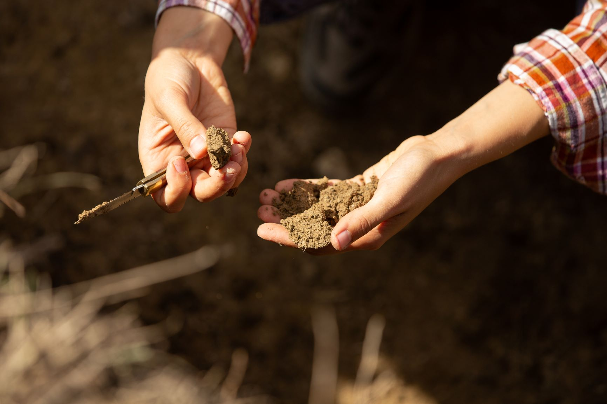
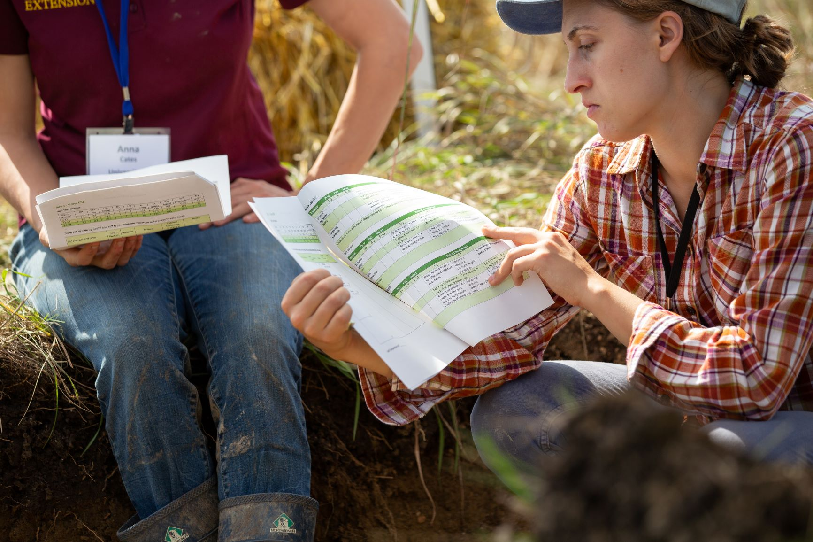

Webinar: May 6, 2020 at 2pm CST
Presented by Hava Blair and Dr. Anna Cates


Watch a recording of the webinar HERE.
This website provides links to webinar materials and additional resources for learning how to use RMarkdown and the R programming language to help you share data with many different stakeholders. Specifically, we share our approach to creating individualized soil health reports for farmers participating in our research project. You can download the template and scripts that generate our soil health reports and adapt them to your own needs. Even if you don't need to create many reports at once like we did, thinking about how you can use R Markdown templates and scripts to automate any data analysis and reporting workflow can vastly increase your efficiency.This research is a project of the Minnesota Office for Soil Health
The webinar slides, report template, and scripts are all available for download on github at the link below. You do not need an account to download materials from github. If you don't have an account, simply click on the green "Clone or download" button on the right hand side of the page and select the option to download ZIP (a zip file).
Webinar hosted by Soil Health Nexus